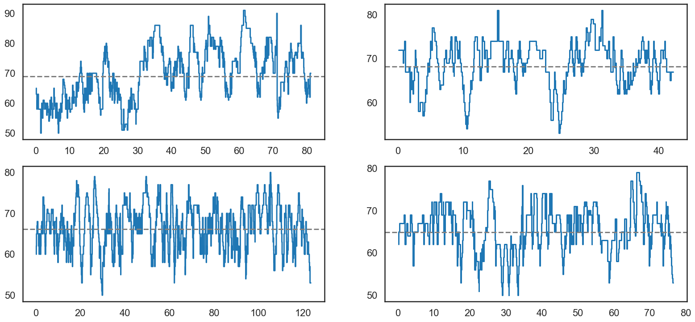
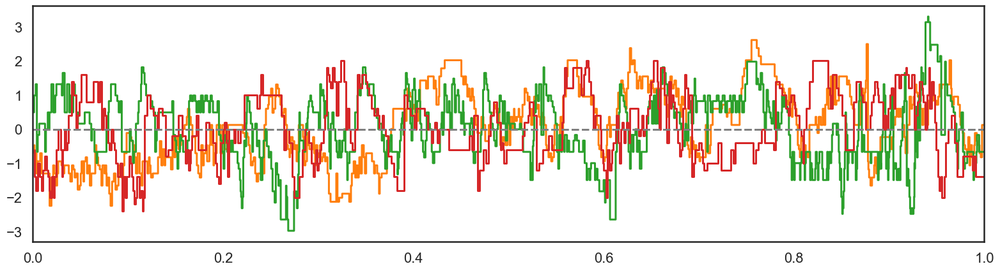
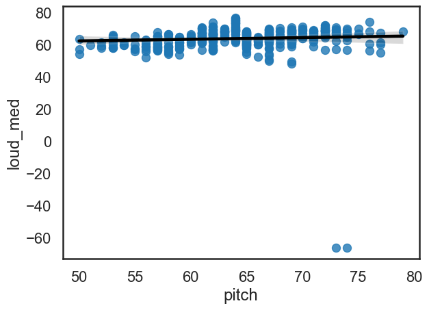
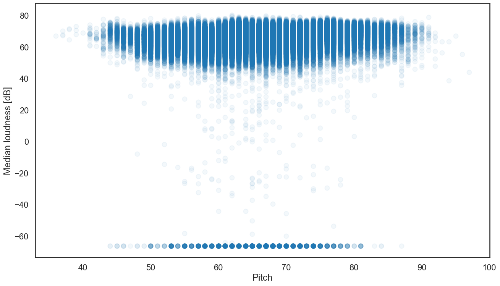
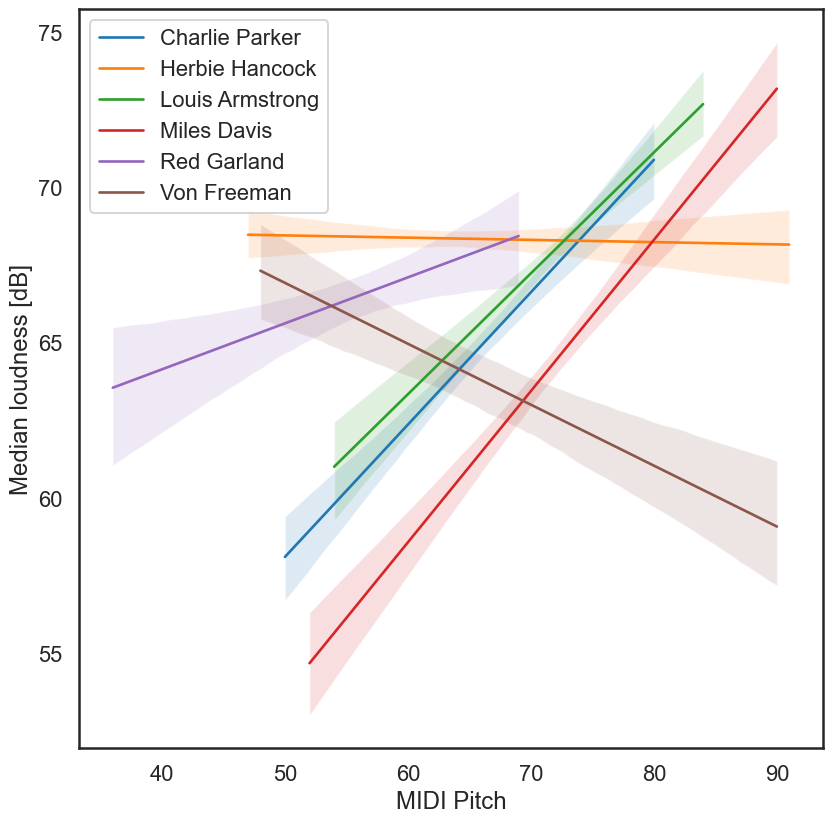

import pandas as pd
import numpy as np
import statsmodels.api as sm
import sqlite3
import matplotlib.pyplot as plt
import seaborn as sns
sns.set_style("white")
sns.set_context("talk")14 Solos in the Weimar Jazz Database
Disclaimer: I am not the expert here!
In this session, we will have a look at is the Jazzomat Research Project that contains the Weimar Jazz Database (WJazzD). Let us first browse the site.
One of the outcomes of this research project is the freely-available book:
- Pfleiderer, M., Frieler, K., Abeßer, J., Zaddach, W.-G., & Burkhard, B. (Eds.) (2017). Inside the Jazzomat. New Perspectives for Jazz Research. Mainz: Schott Campus (Open Access).
The WJazzD can be downloaded at https://jazzomat.hfm-weimar.de/download/download.html A local copy of the database is stored at data/wjazz.db. We use the sqlite3 library to connect to this database.
conn = sqlite3.connect("data/wjazzd.db")conn<sqlite3.Connection at 0x7956a31f7010>We can now use pandas to read the data out of the database.
solos = pd.read_sql("SELECT * FROM melody", con=conn)The "SELECT * FROM melody" means “Select everything from the table ‘melody’ in the database”. Let’s look at the first ten entries.
Likewise, we can select the composition_info table that contains a lot of metadata for the solos:
solos_meta = pd.read_sql("SELECT * from solo_info", con=conn)The .shape attribute shows us how many solos are in the database.
solos_meta.shape(456, 17)The .sample() method draws a number of rows at random from a DataFrame.
solos_meta.sample(5)| melid | trackid | compid | recordid | performer | title | titleaddon | solopart | instrument | style | avgtempo | tempoclass | rhythmfeel | key | signature | chord_changes | chorus_count | |
|---|---|---|---|---|---|---|---|---|---|---|---|---|---|---|---|---|---|
| 235 | 236 | 208 | 186 | 108 | Johnny Dodds | Heebie Jeebies | 1 | cl | TRADITIONAL | 165.8 | MEDIUM UP | TWOBEAT | Ab-maj | 4/4 | A1: ||Eb7 |Eb7 |Ab |Ab |Eb7 F-7 |Co Eb... | 1 | |
| 315 | 316 | 260 | 236 | 140 | Miles Davis | Eighty-One | 1 | tp | POSTBOP | 138.3 | MEDIUM | SWING | F-maj | 4/4 | A1: ||Fsus7 |Bbsus7 |Fsus7 |Fsus7 |Bbs... | 6 | |
| 256 | 257 | 222 | 200 | 114 | Kenny Garrett | Brother Hubbard | 2 | as | FUSION | 143.2 | MEDIUM UP | FUNK | D-min | 4/4 | A1: ||D-7911 |G-7 |D-7911 |G-7 |D-7911... | 2 | |
| 320 | 321 | 204 | 182 | 107 | Miles Davis | Oleo | 2 | tp | HARDBOP | 268.0 | UP | SWING | Bb-maj | 4/4 | A1: ||Bbj7 G7 |C-7 F7 |Bbj7 G7 |C-7 F7 |F-7 Bb... | 2 | |
| 201 | 202 | 179 | 162 | 88 | Joe Henderson | Serenity | 1 | ts | POSTBOP | 157.3 | MEDIUM UP | SWING | Eb-maj | 4/4 | A1: ||Dm7b5NC |G+7 |Abj7 Gbj7 |E-7 A7 |F-7 ... | 5 |
The first rows of a DataFrame can be accessed with the .head() method…
solos.head()| eventid | melid | onset | pitch | duration | period | division | bar | beat | tatum | ... | f0_mod | loud_max | loud_med | loud_sd | loud_relpos | loud_cent | loud_s2b | f0_range | f0_freq_hz | f0_med_dev | |
|---|---|---|---|---|---|---|---|---|---|---|---|---|---|---|---|---|---|---|---|---|---|
| 0 | 1 | 1 | 10.343492 | 65.0 | 0.138776 | 4 | 1 | 0 | 1 | 1 | ... | 0.126209 | 66.526087 | 5.541147 | 0.307692 | 0.389466 | 1.056169 | 37.794261 | 12.932532 | -0.328442 | |
| 1 | 2 | 1 | 10.637642 | 63.0 | 0.171247 | 4 | 4 | 0 | 2 | 1 | ... | 0.349751 | 69.133321 | 2.912412 | 0.250000 | 0.468687 | 1.120317 | 6.365930 | 6.956935 | 11.135423 | |
| 2 | 3 | 1 | 10.843719 | 58.0 | 0.081270 | 4 | 4 | 0 | 2 | 4 | ... | 0.094051 | 66.352130 | 3.564563 | 0.428571 | 0.531354 | 1.310389 | 68.010392 | NaN | 32.366787 | |
| 3 | 4 | 1 | 10.948209 | 61.0 | 0.235102 | 4 | 1 | 0 | 3 | 1 | ... | 0.521187 | 66.484173 | 2.414298 | 0.818182 | 0.559333 | 0.984047 | 15.443906 | 5.867151 | -3.374696 | |
| 4 | 5 | 1 | 11.232653 | 63.0 | 0.130612 | 4 | 1 | 0 | 4 | 1 | ... | 0.560737 | 71.699054 | 2.185794 | 0.166667 | 0.438973 | 1.061262 | 11.444363 | 8.329975 | 6.377737 |
5 rows × 26 columns
… and the last rows with the .tail() method.
solos.tail()| eventid | melid | onset | pitch | duration | period | division | bar | beat | tatum | ... | f0_mod | loud_max | loud_med | loud_sd | loud_relpos | loud_cent | loud_s2b | f0_range | f0_freq_hz | f0_med_dev | |
|---|---|---|---|---|---|---|---|---|---|---|---|---|---|---|---|---|---|---|---|---|---|
| 200804 | 200805 | 456 | 63.135057 | 57.0 | 0.168345 | 4 | 2 | 53 | 4 | 2 | ... | 1.113380 | 72.169552 | 6.896394 | 0.687500 | 0.581956 | 1.271747 | 191.074095 | 10.966972 | -11.891698 | |
| 200805 | 200806 | 456 | 63.303401 | 55.0 | 0.087075 | 4 | 3 | 54 | 1 | 1 | ... | 0.491496 | 69.732265 | 1.814723 | 0.500000 | 0.595212 | 1.339060 | 40.375449 | NaN | -99.173779 | |
| 200806 | 200807 | 456 | 63.390476 | 57.0 | 0.191565 | 4 | 3 | 54 | 1 | 2 | ... | slide | 1.187058 | 76.628621 | 2.628726 | 0.411765 | 0.590950 | 1.432802 | 104.823845 | 11.148561 | -2.911604 |
| 200807 | 200808 | 456 | 63.640091 | 59.0 | 0.406349 | 4 | 1 | 54 | 2 | 1 | ... | 0.972676 | 66.042058 | 3.690577 | 0.000000 | 0.334937 | 1.082549 | 165.810976 | 2.659723 | 14.311001 | |
| 200808 | 200809 | 456 | 64.058050 | 52.0 | 1.433832 | 4 | 2 | 54 | 3 | 2 | ... | vibrato | 0.368321 | 58.174931 | 9.418678 | 0.053030 | 0.400571 | 1.278890 | 66.932198 | 2.153916 | -9.381310 |
5 rows × 26 columns
As we already know, the .shape attribute shows the overall size of the table.
solos.shape(200809, 26)The solos table contains 26 columns that cannot be displayed at once. We can have a look at the column names by using the .columns attribute.
solos.columnsIndex(['eventid', 'melid', 'onset', 'pitch', 'duration', 'period', 'division',
'bar', 'beat', 'tatum', 'subtatum', 'num', 'denom', 'beatprops',
'beatdur', 'tatumprops', 'f0_mod', 'loud_max', 'loud_med', 'loud_sd',
'loud_relpos', 'loud_cent', 'loud_s2b', 'f0_range', 'f0_freq_hz',
'f0_med_dev'],
dtype='object')A description of what these columns contain is stated on the website: https://jazzomat.hfm-weimar.de/dbformat/dbformat.html
For our analyses it will be usefull to have also the name of the performer in the solos DataFrame. We create a dictionary that maps the melid (unique identification number for each solo) to the name of the performer.
mapper = dict( solos_meta[["melid", "performer"]].values )
mapper{1: 'Art Pepper',
2: 'Art Pepper',
3: 'Art Pepper',
4: 'Art Pepper',
5: 'Art Pepper',
6: 'Art Pepper',
7: 'Benny Carter',
8: 'Benny Carter',
9: 'Benny Carter',
10: 'Benny Carter',
11: 'Benny Carter',
12: 'Benny Carter',
13: 'Benny Carter',
14: 'Benny Goodman',
15: 'Benny Goodman',
16: 'Benny Goodman',
17: 'Benny Goodman',
18: 'Benny Goodman',
19: 'Benny Goodman',
20: 'Benny Goodman',
21: 'Ben Webster',
22: 'Ben Webster',
23: 'Ben Webster',
24: 'Ben Webster',
25: 'Ben Webster',
26: 'Bix Beiderbecke',
27: 'Bix Beiderbecke',
28: 'Bix Beiderbecke',
29: 'Bix Beiderbecke',
30: 'Bix Beiderbecke',
31: 'Bob Berg',
32: 'Bob Berg',
33: 'Bob Berg',
34: 'Bob Berg',
35: 'Bob Berg',
36: 'Bob Berg',
37: 'Bob Berg',
38: 'Branford Marsalis',
39: 'Branford Marsalis',
40: 'Branford Marsalis',
41: 'Branford Marsalis',
42: 'Branford Marsalis',
43: 'Branford Marsalis',
44: 'Buck Clayton',
45: 'Buck Clayton',
46: 'Buck Clayton',
47: 'Cannonball Adderley',
48: 'Cannonball Adderley',
49: 'Cannonball Adderley',
50: 'Cannonball Adderley',
51: 'Cannonball Adderley',
52: 'Charlie Parker',
53: 'Charlie Parker',
54: 'Charlie Parker',
55: 'Charlie Parker',
56: 'Charlie Parker',
57: 'Charlie Parker',
58: 'Charlie Parker',
59: 'Charlie Parker',
60: 'Charlie Parker',
61: 'Charlie Parker',
62: 'Charlie Parker',
63: 'Charlie Parker',
64: 'Charlie Parker',
65: 'Charlie Parker',
66: 'Charlie Parker',
67: 'Charlie Parker',
68: 'Charlie Parker',
69: 'Charlie Shavers',
70: 'Chet Baker',
71: 'Chet Baker',
72: 'Chet Baker',
73: 'Chet Baker',
74: 'Chet Baker',
75: 'Chet Baker',
76: 'Chet Baker',
77: 'Chet Baker',
78: 'Chris Potter',
79: 'Chris Potter',
80: 'Chris Potter',
81: 'Chris Potter',
82: 'Chris Potter',
83: 'Chris Potter',
84: 'Chris Potter',
85: 'Chu Berry',
86: 'Chu Berry',
87: 'Clifford Brown',
88: 'Clifford Brown',
89: 'Clifford Brown',
90: 'Clifford Brown',
91: 'Clifford Brown',
92: 'Clifford Brown',
93: 'Clifford Brown',
94: 'Clifford Brown',
95: 'Clifford Brown',
96: 'Coleman Hawkins',
97: 'Coleman Hawkins',
98: 'Coleman Hawkins',
99: 'Coleman Hawkins',
100: 'Coleman Hawkins',
101: 'Coleman Hawkins',
102: 'Curtis Fuller',
103: 'Curtis Fuller',
104: 'David Liebman',
105: 'David Liebman',
106: 'David Liebman',
107: 'David Liebman',
108: 'David Liebman',
109: 'David Liebman',
110: 'David Liebman',
111: 'David Liebman',
112: 'David Liebman',
113: 'David Liebman',
114: 'David Liebman',
115: 'David Murray',
116: 'David Murray',
117: 'David Murray',
118: 'David Murray',
119: 'David Murray',
120: 'David Murray',
121: 'Dexter Gordon',
122: 'Dexter Gordon',
123: 'Dexter Gordon',
124: 'Dexter Gordon',
125: 'Dexter Gordon',
126: 'Dexter Gordon',
127: 'Dickie Wells',
128: 'Dickie Wells',
129: 'Dickie Wells',
130: 'Dickie Wells',
131: 'Dickie Wells',
132: 'Dickie Wells',
133: 'Dizzy Gillespie',
134: 'Dizzy Gillespie',
135: 'Dizzy Gillespie',
136: 'Dizzy Gillespie',
137: 'Dizzy Gillespie',
138: 'Dizzy Gillespie',
139: 'Don Byas',
140: 'Don Byas',
141: 'Don Byas',
142: 'Don Byas',
143: 'Don Byas',
144: 'Don Byas',
145: 'Don Byas',
146: 'Don Byas',
147: 'Don Ellis',
148: 'Don Ellis',
149: 'Don Ellis',
150: 'Don Ellis',
151: 'Don Ellis',
152: 'Don Ellis',
153: 'Eric Dolphy',
154: 'Eric Dolphy',
155: 'Eric Dolphy',
156: 'Eric Dolphy',
157: 'Eric Dolphy',
158: 'Eric Dolphy',
159: 'Fats Navarro',
160: 'Fats Navarro',
161: 'Fats Navarro',
162: 'Fats Navarro',
163: 'Fats Navarro',
164: 'Fats Navarro',
165: 'Freddie Hubbard',
166: 'Freddie Hubbard',
167: 'Freddie Hubbard',
168: 'Freddie Hubbard',
169: 'Freddie Hubbard',
170: 'Freddie Hubbard',
171: 'George Coleman',
172: 'Gerry Mulligan',
173: 'Gerry Mulligan',
174: 'Gerry Mulligan',
175: 'Gerry Mulligan',
176: 'Gerry Mulligan',
177: 'Gerry Mulligan',
178: 'Hank Mobley',
179: 'Hank Mobley',
180: 'Hank Mobley',
181: 'Hank Mobley',
182: 'Harry Edison',
183: 'Henry Allen',
184: 'Herbie Hancock',
185: 'Herbie Hancock',
186: 'Herbie Hancock',
187: 'Herbie Hancock',
188: 'Herbie Hancock',
189: 'J.C. Higginbotham',
190: 'J.J. Johnson',
191: 'J.J. Johnson',
192: 'J.J. Johnson',
193: 'J.J. Johnson',
194: 'J.J. Johnson',
195: 'J.J. Johnson',
196: 'J.J. Johnson',
197: 'J.J. Johnson',
198: 'Joe Henderson',
199: 'Joe Henderson',
200: 'Joe Henderson',
201: 'Joe Henderson',
202: 'Joe Henderson',
203: 'Joe Henderson',
204: 'Joe Henderson',
205: 'Joe Henderson',
206: 'Joe Lovano',
207: 'Joe Lovano',
208: 'Joe Lovano',
209: 'Joe Lovano',
210: 'Joe Lovano',
211: 'Joe Lovano',
212: 'Joe Lovano',
213: 'Joe Lovano',
214: 'John Abercrombie',
215: 'John Coltrane',
216: 'John Coltrane',
217: 'John Coltrane',
218: 'John Coltrane',
219: 'John Coltrane',
220: 'John Coltrane',
221: 'John Coltrane',
222: 'John Coltrane',
223: 'John Coltrane',
224: 'John Coltrane',
225: 'John Coltrane',
226: 'John Coltrane',
227: 'John Coltrane',
228: 'John Coltrane',
229: 'John Coltrane',
230: 'John Coltrane',
231: 'John Coltrane',
232: 'John Coltrane',
233: 'John Coltrane',
234: 'John Coltrane',
235: 'Johnny Dodds',
236: 'Johnny Dodds',
237: 'Johnny Dodds',
238: 'Johnny Dodds',
239: 'Johnny Dodds',
240: 'Johnny Dodds',
241: 'Johnny Hodges',
242: 'Johnny Hodges',
243: 'Joshua Redman',
244: 'Joshua Redman',
245: 'Joshua Redman',
246: 'Joshua Redman',
247: 'Joshua Redman',
248: 'Kai Winding',
249: 'Kenny Dorham',
250: 'Kenny Dorham',
251: 'Kenny Dorham',
252: 'Kenny Dorham',
253: 'Kenny Dorham',
254: 'Kenny Dorham',
255: 'Kenny Dorham',
256: 'Kenny Garrett',
257: 'Kenny Garrett',
258: 'Kenny Wheeler',
259: 'Kenny Wheeler',
260: 'Kenny Wheeler',
261: 'Kid Ory',
262: 'Kid Ory',
263: 'Kid Ory',
264: 'Kid Ory',
265: 'Kid Ory',
266: 'Lee Konitz',
267: 'Lee Konitz',
268: 'Lee Konitz',
269: 'Lee Konitz',
270: 'Lee Konitz',
271: 'Lee Konitz',
272: 'Lee Konitz',
273: 'Lee Konitz',
274: 'Lee Morgan',
275: 'Lee Morgan',
276: 'Lee Morgan',
277: 'Lee Morgan',
278: 'Lester Young',
279: 'Lester Young',
280: 'Lester Young',
281: 'Lester Young',
282: 'Lester Young',
283: 'Lester Young',
284: 'Lester Young',
285: 'Lionel Hampton',
286: 'Lionel Hampton',
287: 'Lionel Hampton',
288: 'Lionel Hampton',
289: 'Lionel Hampton',
290: 'Lionel Hampton',
291: 'Louis Armstrong',
292: 'Louis Armstrong',
293: 'Louis Armstrong',
294: 'Louis Armstrong',
295: 'Louis Armstrong',
296: 'Louis Armstrong',
297: 'Louis Armstrong',
298: 'Louis Armstrong',
299: 'Michael Brecker',
300: 'Michael Brecker',
301: 'Michael Brecker',
302: 'Michael Brecker',
303: 'Michael Brecker',
304: 'Michael Brecker',
305: 'Michael Brecker',
306: 'Michael Brecker',
307: 'Michael Brecker',
308: 'Michael Brecker',
309: 'Miles Davis',
310: 'Miles Davis',
311: 'Miles Davis',
312: 'Miles Davis',
313: 'Miles Davis',
314: 'Miles Davis',
315: 'Miles Davis',
316: 'Miles Davis',
317: 'Miles Davis',
318: 'Miles Davis',
319: 'Miles Davis',
320: 'Miles Davis',
321: 'Miles Davis',
322: 'Miles Davis',
323: 'Miles Davis',
324: 'Miles Davis',
325: 'Miles Davis',
326: 'Miles Davis',
327: 'Miles Davis',
328: 'Milt Jackson',
329: 'Milt Jackson',
330: 'Milt Jackson',
331: 'Milt Jackson',
332: 'Milt Jackson',
333: 'Milt Jackson',
334: 'Nat Adderley',
335: 'Nat Adderley',
336: 'Ornette Coleman',
337: 'Ornette Coleman',
338: 'Ornette Coleman',
339: 'Ornette Coleman',
340: 'Ornette Coleman',
341: 'Pat Martino',
342: 'Pat Metheny',
343: 'Pat Metheny',
344: 'Pat Metheny',
345: 'Pat Metheny',
346: 'Paul Desmond',
347: 'Paul Desmond',
348: 'Paul Desmond',
349: 'Paul Desmond',
350: 'Paul Desmond',
351: 'Paul Desmond',
352: 'Paul Desmond',
353: 'Paul Desmond',
354: 'Pepper Adams',
355: 'Pepper Adams',
356: 'Pepper Adams',
357: 'Pepper Adams',
358: 'Pepper Adams',
359: 'Phil Woods',
360: 'Phil Woods',
361: 'Phil Woods',
362: 'Phil Woods',
363: 'Phil Woods',
364: 'Phil Woods',
365: 'Red Garland',
366: 'Rex Stewart',
367: 'Roy Eldridge',
368: 'Roy Eldridge',
369: 'Roy Eldridge',
370: 'Roy Eldridge',
371: 'Roy Eldridge',
372: 'Roy Eldridge',
373: 'Sidney Bechet',
374: 'Sidney Bechet',
375: 'Sidney Bechet',
376: 'Sidney Bechet',
377: 'Sidney Bechet',
378: 'Sonny Rollins',
379: 'Sonny Rollins',
380: 'Sonny Rollins',
381: 'Sonny Rollins',
382: 'Sonny Rollins',
383: 'Sonny Rollins',
384: 'Sonny Rollins',
385: 'Sonny Rollins',
386: 'Sonny Rollins',
387: 'Sonny Rollins',
388: 'Sonny Rollins',
389: 'Sonny Rollins',
390: 'Sonny Rollins',
391: 'Sonny Stitt',
392: 'Sonny Stitt',
393: 'Sonny Stitt',
394: 'Sonny Stitt',
395: 'Sonny Stitt',
396: 'Sonny Stitt',
397: 'Stan Getz',
398: 'Stan Getz',
399: 'Stan Getz',
400: 'Stan Getz',
401: 'Stan Getz',
402: 'Stan Getz',
403: 'Steve Coleman',
404: 'Steve Coleman',
405: 'Steve Coleman',
406: 'Steve Coleman',
407: 'Steve Coleman',
408: 'Steve Coleman',
409: 'Steve Coleman',
410: 'Steve Coleman',
411: 'Steve Coleman',
412: 'Steve Coleman',
413: 'Steve Lacy',
414: 'Steve Lacy',
415: 'Steve Lacy',
416: 'Steve Lacy',
417: 'Steve Lacy',
418: 'Steve Lacy',
419: 'Steve Turre',
420: 'Steve Turre',
421: 'Steve Turre',
422: 'Von Freeman',
423: 'Warne Marsh',
424: 'Warne Marsh',
425: 'Warne Marsh',
426: 'Wayne Shorter',
427: 'Wayne Shorter',
428: 'Wayne Shorter',
429: 'Wayne Shorter',
430: 'Wayne Shorter',
431: 'Wayne Shorter',
432: 'Wayne Shorter',
433: 'Wayne Shorter',
434: 'Wayne Shorter',
435: 'Wayne Shorter',
436: 'Woody Shaw',
437: 'Woody Shaw',
438: 'Woody Shaw',
439: 'Woody Shaw',
440: 'Woody Shaw',
441: 'Woody Shaw',
442: 'Woody Shaw',
443: 'Woody Shaw',
444: 'Wynton Marsalis',
445: 'Wynton Marsalis',
446: 'Wynton Marsalis',
447: 'Wynton Marsalis',
448: 'Wynton Marsalis',
449: 'Wynton Marsalis',
450: 'Wynton Marsalis',
451: 'Zoot Sims',
452: 'Zoot Sims',
453: 'Zoot Sims',
454: 'Zoot Sims',
455: 'Zoot Sims',
456: 'Zoot Sims'}We can now use this dictionary to create a new column performer in the solos DataFrame.
solos["performer"] = solos["melid"].map(mapper)solos.head()| eventid | melid | onset | pitch | duration | period | division | bar | beat | tatum | ... | loud_max | loud_med | loud_sd | loud_relpos | loud_cent | loud_s2b | f0_range | f0_freq_hz | f0_med_dev | performer | |
|---|---|---|---|---|---|---|---|---|---|---|---|---|---|---|---|---|---|---|---|---|---|
| 0 | 1 | 1 | 10.343492 | 65.0 | 0.138776 | 4 | 1 | 0 | 1 | 1 | ... | 0.126209 | 66.526087 | 5.541147 | 0.307692 | 0.389466 | 1.056169 | 37.794261 | 12.932532 | -0.328442 | Art Pepper |
| 1 | 2 | 1 | 10.637642 | 63.0 | 0.171247 | 4 | 4 | 0 | 2 | 1 | ... | 0.349751 | 69.133321 | 2.912412 | 0.250000 | 0.468687 | 1.120317 | 6.365930 | 6.956935 | 11.135423 | Art Pepper |
| 2 | 3 | 1 | 10.843719 | 58.0 | 0.081270 | 4 | 4 | 0 | 2 | 4 | ... | 0.094051 | 66.352130 | 3.564563 | 0.428571 | 0.531354 | 1.310389 | 68.010392 | NaN | 32.366787 | Art Pepper |
| 3 | 4 | 1 | 10.948209 | 61.0 | 0.235102 | 4 | 1 | 0 | 3 | 1 | ... | 0.521187 | 66.484173 | 2.414298 | 0.818182 | 0.559333 | 0.984047 | 15.443906 | 5.867151 | -3.374696 | Art Pepper |
| 4 | 5 | 1 | 11.232653 | 63.0 | 0.130612 | 4 | 1 | 0 | 4 | 1 | ... | 0.560737 | 71.699054 | 2.185794 | 0.166667 | 0.438973 | 1.061262 | 11.444363 | 8.329975 | 6.377737 | Art Pepper |
5 rows × 27 columns
solos.tail()| eventid | melid | onset | pitch | duration | period | division | bar | beat | tatum | ... | loud_max | loud_med | loud_sd | loud_relpos | loud_cent | loud_s2b | f0_range | f0_freq_hz | f0_med_dev | performer | |
|---|---|---|---|---|---|---|---|---|---|---|---|---|---|---|---|---|---|---|---|---|---|
| 200804 | 200805 | 456 | 63.135057 | 57.0 | 0.168345 | 4 | 2 | 53 | 4 | 2 | ... | 1.113380 | 72.169552 | 6.896394 | 0.687500 | 0.581956 | 1.271747 | 191.074095 | 10.966972 | -11.891698 | Zoot Sims |
| 200805 | 200806 | 456 | 63.303401 | 55.0 | 0.087075 | 4 | 3 | 54 | 1 | 1 | ... | 0.491496 | 69.732265 | 1.814723 | 0.500000 | 0.595212 | 1.339060 | 40.375449 | NaN | -99.173779 | Zoot Sims |
| 200806 | 200807 | 456 | 63.390476 | 57.0 | 0.191565 | 4 | 3 | 54 | 1 | 2 | ... | 1.187058 | 76.628621 | 2.628726 | 0.411765 | 0.590950 | 1.432802 | 104.823845 | 11.148561 | -2.911604 | Zoot Sims |
| 200807 | 200808 | 456 | 63.640091 | 59.0 | 0.406349 | 4 | 1 | 54 | 2 | 1 | ... | 0.972676 | 66.042058 | 3.690577 | 0.000000 | 0.334937 | 1.082549 | 165.810976 | 2.659723 | 14.311001 | Zoot Sims |
| 200808 | 200809 | 456 | 64.058050 | 52.0 | 1.433832 | 4 | 2 | 54 | 3 | 2 | ... | 0.368321 | 58.174931 | 9.418678 | 0.053030 | 0.400571 | 1.278890 | 66.932198 | 2.153916 | -9.381310 | Zoot Sims |
5 rows × 27 columns
14.1 Melodic arc?
Does the melodic arc also appear in the Jazz solos?
def notelist(melid):
solo = solos[solos["melid"] == melid]
solo = solo[["pitch", "duration"]]
solo["onset"] = solo["duration"].cumsum()
return solonotelist(1)| pitch | duration | onset | |
|---|---|---|---|
| 0 | 65.0 | 0.138776 | 0.138776 |
| 1 | 63.0 | 0.171247 | 0.310023 |
| 2 | 58.0 | 0.081270 | 0.391293 |
| 3 | 61.0 | 0.235102 | 0.626395 |
| 4 | 63.0 | 0.130612 | 0.757007 |
| ... | ... | ... | ... |
| 525 | 66.0 | 0.137143 | 80.645238 |
| 526 | 65.0 | 0.101587 | 80.746825 |
| 527 | 63.0 | 0.104490 | 80.851315 |
| 528 | 62.0 | 0.110295 | 80.961610 |
| 529 | 70.0 | 0.187211 | 81.148821 |
530 rows × 3 columns
def plot_melodic_profile(notelist, ax=None, c=None, mean=False, Z=False, sections=False, standardized=False):
if ax == None:
ax = plt.gca()
if standardized:
x = notelist["Rel. Onset"]
y = notelist["Rel. MIDI Pitch"]
else:
x = notelist["onset"]
y = notelist["pitch"]
ax.step(x,y, color=c)
if mean:
ax.axhline(y.mean(), color="gray", linestyle="--")
if sections:
for l in [ x.max() * i for i in [ 1/4, 1/2, 3/4] ]:
ax.axvline(l, color="gray", linewidth=1, linestyle="--")fig, axes = plt.subplots(2,2, figsize=(20,9))
axes = axes.flatten()
plot_melodic_profile(notelist(1), ax=axes[0], mean=True)
plot_melodic_profile(notelist(77), ax=axes[1], mean=True)
plot_melodic_profile(notelist(50), ax=axes[2], mean=True)
plot_melodic_profile(notelist(233), ax=axes[3], mean=True)
def standardize(notelist):
"""
Takes a notelist as input and returns a standardized version.
"""
notelist["Rel. MIDI Pitch"] = (notelist["pitch"] - notelist["pitch"].mean()) / notelist["pitch"].std()
notelist["Rel. Duration"] = notelist["duration"] / notelist["duration"].sum()
notelist["Rel. Onset"] = notelist["onset"] / notelist["onset"].max()
return noteliststandardize(notelist(1))| pitch | duration | onset | Rel. MIDI Pitch | Rel. Duration | Rel. Onset | |
|---|---|---|---|---|---|---|
| 0 | 65.0 | 0.138776 | 0.138776 | -0.460594 | 0.001710 | 0.001710 |
| 1 | 63.0 | 0.171247 | 0.310023 | -0.697714 | 0.002110 | 0.003820 |
| 2 | 58.0 | 0.081270 | 0.391293 | -1.290513 | 0.001001 | 0.004822 |
| 3 | 61.0 | 0.235102 | 0.626395 | -0.934833 | 0.002897 | 0.007719 |
| 4 | 63.0 | 0.130612 | 0.757007 | -0.697714 | 0.001610 | 0.009329 |
| ... | ... | ... | ... | ... | ... | ... |
| 525 | 66.0 | 0.137143 | 80.645238 | -0.342034 | 0.001690 | 0.993794 |
| 526 | 65.0 | 0.101587 | 80.746825 | -0.460594 | 0.001252 | 0.995046 |
| 527 | 63.0 | 0.104490 | 80.851315 | -0.697714 | 0.001288 | 0.996334 |
| 528 | 62.0 | 0.110295 | 80.961610 | -0.816274 | 0.001359 | 0.997693 |
| 529 | 70.0 | 0.187211 | 81.148821 | 0.132205 | 0.002307 | 1.000000 |
530 rows × 6 columns
fig, ax = plt.subplots(figsize=(20,5))
for i in range(4):
plot_melodic_profile(standardize(notelist(i)),
mean=True,
standardized=True)
plt.xlim(0,1)
plt.show()
big_df = pd.concat([standardize(notelist(i)) for i in range(solos_meta.shape[0])])solos| eventid | melid | onset | pitch | duration | period | division | bar | beat | tatum | ... | loud_max | loud_med | loud_sd | loud_relpos | loud_cent | loud_s2b | f0_range | f0_freq_hz | f0_med_dev | performer | |
|---|---|---|---|---|---|---|---|---|---|---|---|---|---|---|---|---|---|---|---|---|---|
| 0 | 1 | 1 | 10.343492 | 65.0 | 0.138776 | 4 | 1 | 0 | 1 | 1 | ... | 0.126209 | 66.526087 | 5.541147 | 0.307692 | 0.389466 | 1.056169 | 37.794261 | 12.932532 | -0.328442 | Art Pepper |
| 1 | 2 | 1 | 10.637642 | 63.0 | 0.171247 | 4 | 4 | 0 | 2 | 1 | ... | 0.349751 | 69.133321 | 2.912412 | 0.250000 | 0.468687 | 1.120317 | 6.365930 | 6.956935 | 11.135423 | Art Pepper |
| 2 | 3 | 1 | 10.843719 | 58.0 | 0.081270 | 4 | 4 | 0 | 2 | 4 | ... | 0.094051 | 66.352130 | 3.564563 | 0.428571 | 0.531354 | 1.310389 | 68.010392 | NaN | 32.366787 | Art Pepper |
| 3 | 4 | 1 | 10.948209 | 61.0 | 0.235102 | 4 | 1 | 0 | 3 | 1 | ... | 0.521187 | 66.484173 | 2.414298 | 0.818182 | 0.559333 | 0.984047 | 15.443906 | 5.867151 | -3.374696 | Art Pepper |
| 4 | 5 | 1 | 11.232653 | 63.0 | 0.130612 | 4 | 1 | 0 | 4 | 1 | ... | 0.560737 | 71.699054 | 2.185794 | 0.166667 | 0.438973 | 1.061262 | 11.444363 | 8.329975 | 6.377737 | Art Pepper |
| ... | ... | ... | ... | ... | ... | ... | ... | ... | ... | ... | ... | ... | ... | ... | ... | ... | ... | ... | ... | ... | ... |
| 200804 | 200805 | 456 | 63.135057 | 57.0 | 0.168345 | 4 | 2 | 53 | 4 | 2 | ... | 1.113380 | 72.169552 | 6.896394 | 0.687500 | 0.581956 | 1.271747 | 191.074095 | 10.966972 | -11.891698 | Zoot Sims |
| 200805 | 200806 | 456 | 63.303401 | 55.0 | 0.087075 | 4 | 3 | 54 | 1 | 1 | ... | 0.491496 | 69.732265 | 1.814723 | 0.500000 | 0.595212 | 1.339060 | 40.375449 | NaN | -99.173779 | Zoot Sims |
| 200806 | 200807 | 456 | 63.390476 | 57.0 | 0.191565 | 4 | 3 | 54 | 1 | 2 | ... | 1.187058 | 76.628621 | 2.628726 | 0.411765 | 0.590950 | 1.432802 | 104.823845 | 11.148561 | -2.911604 | Zoot Sims |
| 200807 | 200808 | 456 | 63.640091 | 59.0 | 0.406349 | 4 | 1 | 54 | 2 | 1 | ... | 0.972676 | 66.042058 | 3.690577 | 0.000000 | 0.334937 | 1.082549 | 165.810976 | 2.659723 | 14.311001 | Zoot Sims |
| 200808 | 200809 | 456 | 64.058050 | 52.0 | 1.433832 | 4 | 2 | 54 | 3 | 2 | ... | 0.368321 | 58.174931 | 9.418678 | 0.053030 | 0.400571 | 1.278890 | 66.932198 | 2.153916 | -9.381310 | Zoot Sims |
200809 rows × 27 columns
big_df| pitch | duration | onset | Rel. MIDI Pitch | Rel. Duration | Rel. Onset | |
|---|---|---|---|---|---|---|
| 0 | 65.0 | 0.138776 | 0.138776 | -0.460594 | 0.001710 | 0.001710 |
| 1 | 63.0 | 0.171247 | 0.310023 | -0.697714 | 0.002110 | 0.003820 |
| 2 | 58.0 | 0.081270 | 0.391293 | -1.290513 | 0.001001 | 0.004822 |
| 3 | 61.0 | 0.235102 | 0.626395 | -0.934833 | 0.002897 | 0.007719 |
| 4 | 63.0 | 0.130612 | 0.757007 | -0.697714 | 0.001610 | 0.009329 |
| ... | ... | ... | ... | ... | ... | ... |
| 200585 | 62.0 | 0.870748 | 68.588934 | 0.014206 | 0.012540 | 0.987794 |
| 200586 | 57.0 | 0.133515 | 68.722449 | -0.896471 | 0.001923 | 0.989717 |
| 200587 | 62.0 | 0.139320 | 68.861769 | 0.014206 | 0.002006 | 0.991723 |
| 200588 | 61.0 | 0.133515 | 68.995283 | -0.167930 | 0.001923 | 0.993646 |
| 200589 | 60.0 | 0.441179 | 69.436463 | -0.350065 | 0.006354 | 1.000000 |
200590 rows × 6 columns
solos_meta["performer"].unique()array(['Art Pepper', 'Benny Carter', 'Benny Goodman', 'Ben Webster',
'Bix Beiderbecke', 'Bob Berg', 'Branford Marsalis', 'Buck Clayton',
'Cannonball Adderley', 'Charlie Parker', 'Charlie Shavers',
'Chet Baker', 'Chris Potter', 'Chu Berry', 'Clifford Brown',
'Coleman Hawkins', 'Curtis Fuller', 'David Liebman',
'David Murray', 'Dexter Gordon', 'Dickie Wells', 'Dizzy Gillespie',
'Don Byas', 'Don Ellis', 'Eric Dolphy', 'Fats Navarro',
'Freddie Hubbard', 'George Coleman', 'Gerry Mulligan',
'Hank Mobley', 'Harry Edison', 'Henry Allen', 'Herbie Hancock',
'J.C. Higginbotham', 'J.J. Johnson', 'Joe Henderson', 'Joe Lovano',
'John Abercrombie', 'John Coltrane', 'Johnny Dodds',
'Johnny Hodges', 'Joshua Redman', 'Kai Winding', 'Kenny Dorham',
'Kenny Garrett', 'Kenny Wheeler', 'Kid Ory', 'Lee Konitz',
'Lee Morgan', 'Lester Young', 'Lionel Hampton', 'Louis Armstrong',
'Michael Brecker', 'Miles Davis', 'Milt Jackson', 'Nat Adderley',
'Ornette Coleman', 'Pat Martino', 'Pat Metheny', 'Paul Desmond',
'Pepper Adams', 'Phil Woods', 'Red Garland', 'Rex Stewart',
'Roy Eldridge', 'Sidney Bechet', 'Sonny Rollins', 'Sonny Stitt',
'Stan Getz', 'Steve Coleman', 'Steve Lacy', 'Steve Turre',
'Von Freeman', 'Warne Marsh', 'Wayne Shorter', 'Woody Shaw',
'Wynton Marsalis', 'Zoot Sims'], dtype=object)%%time
fig, ax = plt.subplots(figsize=(12,8))
artists = ["Louis Armstrong"]
# for i, (artist, group) in enumerate(solos.groupby("performer")):
# if artist in artists:
# for j, group in group.groupby("melid"):
# solo = standardize(notelist(j))
# x = solo["Rel. Onset"]
# y = solo["Rel. MIDI Pitch"]
# ax. plot(x,y, lw=.5, c="tab:red", alpha=.5)
for ID in range(solos_meta.shape[0]):
solo = standardize(notelist(ID))
x = solo["Rel. Onset"]
y = solo["Rel. MIDI Pitch"]
ax. plot(x,y, lw=.5, c="tab:red", alpha=.05)
ax.axvline(.25, lw=2, ls="--", c="gray")
ax.axvline(.5, lw=2, ls="--", c="gray")
ax.axvline(.75, lw=2, ls="--", c="gray")
ax.axhline(0, lw=2, ls="--", c="gray")
lowess = sm.nonparametric.lowess
big_x = big_df["Rel. Onset"]
big_y = big_df["Rel. MIDI Pitch"]
big_z = lowess(big_y, big_x, frac=1/10, delta=1/20)
ax.plot(big_z[:,0], big_z[:,1], c="black", lw=3)
plt.title("Solo wave")
plt.xlabel("Relative onset")
plt.ylabel("Pitch deviation")
plt.xticks(np.linspace(0,1,5))
plt.yticks(np.linspace(-5,5,11))
plt.xlim(0,1)
plt.tight_layout()
plt.savefig("img/jazz_melodic_arc.png")
plt.show()CPU times: user 2.86 s, sys: 26 ms, total: 2.88 s
Wall time: 2.7 s14.2 Pitch vs loudness
Above we have already analyzed some melodic profiles and seen that, on average, the Jazz solos tend not to follow the melodic arch on a global scale. Now, we ask whether the pitch of the notes in the solos are related to another important feature of performance: loudness. The WJazzD contains several measures for loudness (compare the columns in the solos DataFrame). Here, we focus on the “Median loudness” which is stored in the loud_med column.
Let us look at an example.
example_solo = solos[ solos["melid"] == 233 ][["pitch", "loud_med"]]example_solo| pitch | loud_med | |
|---|---|---|
| 115075 | 62.0 | 67.082700 |
| 115076 | 65.0 | 65.345677 |
| 115077 | 67.0 | 66.323539 |
| 115078 | 69.0 | 69.204257 |
| 115079 | 62.0 | 69.059581 |
| ... | ... | ... |
| 115549 | 59.0 | 61.083907 |
| 115550 | 57.0 | 58.345887 |
| 115551 | 55.0 | 65.132786 |
| 115552 | 54.0 | 59.595735 |
| 115553 | 53.0 | 58.390132 |
479 rows × 2 columns
We can get a visual impression of whether there might be a direct relation between the two features by plotting it and drawing a regression line. For this, the regplot() function of the seaborn library is well-suited.
sns.regplot(data=example_solo, x="pitch", y="loud_med", line_kws={"color":"black"});
There seems to be no clear relation; no matter how high the pitch, the loudness stays more or less the same. Let’s look at another example!
example_solo2 = solos[ solos["melid"] == 333 ][["pitch", "loud_med"]]
sns.regplot(data=example_solo2, x="pitch", y="loud_med", line_kws={"color":"black"});In this case, there is a positive trend. The higher the pitch, the louder the performer plays. Since we have now two different examples - in one case no relation, in the other case a positive correlation - we should now look at whether there is a trend emerging from all solos taken together.
14.3 The “rain cloud” of Jazz solos
We now take all 200’809 notes from all solos and look at the relation between their pitch and their median loudness.
X = solos[["pitch", "loud_med"]].values
x = X[:,0]
y = X[:,1]
fig, ax = plt.subplots(figsize=(16,9))
ax.scatter(x,y, alpha=0.05)
plt.xlabel("Pitch")
plt.ylabel("Median loudness [dB]")
plt.show()
The visual impression is that of a cloud from which rain drops down and forms a puddle. Which trends can we observe?
14.4 Comparing performers
Taking all pieces together was not really informative. Maybe a somewhat closer look brings more to the front. Let us some specific performers whose solos we want to compare.
selected_performers = ["Charlie Parker", "Miles Davis", "Louis Armstrong", "Herbie Hancock", "Von Freeman", "Red Garland"]grouped_df = solos.groupby("performer")fig, ax = plt.subplots(figsize=(10,10))
for performer, df in grouped_df:
if performer in selected_performers:
sns.regplot(
data=df,
x="pitch",
y="loud_med",
x_jitter=.1,
y_jitter=.1,
scatter_kws={"alpha":.01, "color":"grey"},
line_kws={"lw":2},
label=performer,
scatter=False,
ax=ax
)
plt.xlabel("MIDI Pitch")
plt.ylabel("Median loudness [dB]")
plt.legend()
plt.show()
Observations:
- Most performers increase loudness with increasing pitch.
- Charlie Parker (sax) and Louis Armstrong (t) show very similar patterns but Armstrong is generally higher.
- Miles Davis (t) is similar to the two but plays generally softer than both.
- Von Freeman (sax) strongly and Herbie Hancock (p) weakly decrease loudness with increasing pitch (almost all other performers show positive correlations).
- Red Garland (p) plays generally lower than Herbie Hancock (p) but does show a positive correlation between pitch and loudness (NB: there is only one solo in the database).
Does this tell us something about performer styles or about instruments?